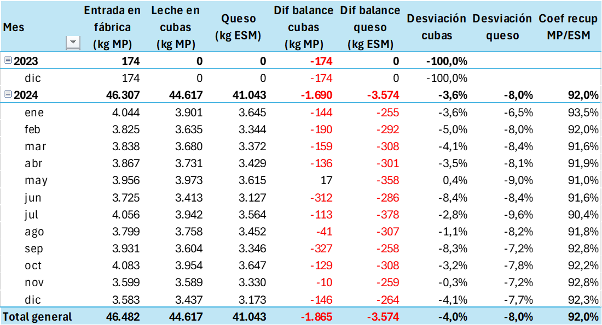

11 Los rendimientos queseros
En el capítulo anterior hemos visto el balance de materia y cómo nos ayuda a conocer las pérdidas en las diferentes etapas del proceso de elaboración. En el balance de materia grasa que hemos hecho como ejemplo, hemos visto que las pérdidas más importantes se producen en la fase de elaboración; esto es debido sobre todo a la pérdida de materia grasa en el suero, pero también a las pérdidas extraordinarias de materia por desviaciones en la tecnología. También hemos encontrado ua dificultad para hacer un balance correcto de la materia proteica cuando no se hace un análisis de proteína del queso, y sólo se dispone del análisis de la leche y le extracto seco del queso.
En este capítulo abordaremos el análisis de la eficiencia de la transformación quesera, mediante los indicadores del rendimiento quesero, que calcularemos a partir de los valores analíticos de la leche de fabricación y del queso recién elaborado, utilizando para la proteína el coeficiente de recuperación calculado con el extracto seco magro (ESM) del queso. Extraeremos diversas conclusiones:
- Estableceremos los parámetros de referencia de nuestro propio proceso, que nos servirán de punto de comparación para las fabricaciones que vayamos realizando.
- Evaluaremos las causas posibles de las desviaciones, y veremos cómo proponer planes de acción para la reducción o eliminación de estas desviaciones.
Abrir este cuaderno en Google Colab
Descargar los datos de ejemplo utilizados en este cuaderno (archivo fab_queso_sim.csv)
11.1 Un ejemplo de cálculo de rendimientos
Vamos a utilizar los datos de producción de la empresa que hemos visto en el capítulo anterior. La empresa ha fabricado durante un año unos 5.000 L diarios, sólo en días laborables. Esto supone la cantidad aproximada de 1.300.000 litros de leche de vaca, algo más de 100.000 L al mes. Esta empresa ha elaborado un solo tipo de queso, y sus ventas han sido de unas 130 toneladas de queso. El responsable de la empresa nos dice que el rendimiento quesero de esta fábrica que él está estimando es de 10 litros por kilo de queso; para calcularlo, ha dividido los litros de leche comprados entre los kilos de queso vendido.
La relación litros de leche por kilo de queso, que usamos en este ejemplo, puede resultar útil como aproximación rápida, pero no es una medida fiable del rendimiento cuando la composición del queso varía, y puede llevar a conclusiones erróneas. Esta medida sólo es válida si el queso tiene la composición correcta en extracto seco y materia grasa. Si estos parámetros cambian, el valor de litros/kilo deja de reflejar el rendimiento real.
En este capítulo veremos que, para evaluar el rendimiento de forma rigurosa, debemos utilizar el consumo de materia grasa y de proteína por kilo de queso producido, una medida que refleja con precisión el aprovechamiento real de los componentes lácteos.
A la vista de estos datos, esta empresa,
- ¿ha fabricado bien o ha fabricado mal?
- ¿Cómo puede organizar su información y analizarla para saber qué mejoras puede poner en marcha y mejorar sus resultados?
- ¿Cómo puede compararse con otras empresas competidoras y saber si está trabajando mejor o peor que la competencia?
De una forma práctica, a los efectos de la gestión contable, la información proporcionada es real y correcta, y delimita bien los límites del proceso industrial, desde la compra de leche hasta la venta del queso. Sin embargo, no nos ayuda a entender la calidad del trabajo ni dónde deberíamos actuar para plantear mejoras.
Pérdidas en recepción y tratamiento de leche: pérdidas de materia
Con los datos que nos han facilitado no tenemos suficiente información para profundizar más, por lo que estudiamos sus documentos de fabricación. Revisamos sus registros de quesería (en nuestro ejemplo, los datos en el CSV) y comprobamos que, con unas entradas de leche contabilizadas de 1.301.407 litros, la cantidad de leche realmente controlada como fabricada, mediante el control en la cuba, ha sido algo superior; el quesero ha contabilizado en cuba 1.308.012 litros, sumando todas las cubas fabricadas. Es decir, entre la leche que la empresa ha comprado y la que ha enviado a quesería para fabricación, ha ganado una cantidad mínima de volumen (0,5%).
Analizando estos datos con el quesero y las personas de fábrica, descubrimos que en los depósitos de leche y línea de pasteurización, hay válvulas que no cierran bien y en ocasiones la leche se derrama por el suelo, y también que ha habido algún accidente debido a mangueras que no se habían conectado bien y han producido también algunos derrames, aparte de otras incidencias diversas. Esto nos lleva a pensar que el pequeño incremento de volumen puede deberse a arrastres de agua, pero que puede haber pérdidas reales de leche. ¿Cómo saberlo? La respuesta es: verificando la composición en nuestros registros documentales (datos en el CSV).
La leche comprada tenía un contenido de 54.989 kg de materia grasa y 46.482 kg de proteína. La leche enviada a fabricación tenía 52.772 kg de materia grasa y 44.617 kg de proteína. Las cantidades de materia en cuba son netamente inferiores a lo comprado, aunque los litros utilizados son prácticamente los mismos. Suponemos que los litros se han mantenido por los arrastres de agua, pero si la materia en cuba es inferior a lo comprado, parece claro que hemos perdido leche en los procesos de descarga y trasvases, como nos dice el conjunto de problemas que hemos constatado.
Como en el pago de la leche utilizamos la composición en grasa y proteína para el pago por calidad, está claro que hemos pagado más materia de la que ha entrado realmente en la cuba de fabricación. Si utilizamos para el cálculo de rendimiento los litros, que prácticamente se han mantenido, no tendremos en cuenta esta pérdida de materia, que es real, y que ya hemos constatado en nuestro balance de materia.
Pérdidas en maduración: mermas por pérdida de humedad
El responsable nos da algo más de información del proceso: después de la elaboración, el queso tiene un período de maduración en cámara de 15 días, en donde el queso se seca y afina, y en consecuencia, pierde peso (pierde humedad, aunque no materia láctea). El quesero considera que esa pérdida de peso no debería contabilizarse en sus rendimientos queseros, porque el afinado del queso no está en su responsabilidad y es un proceso posterior a la fabricación. Como parece un comentario razonable, volvemos a verificar la información de nuestro fichero de datos.
En realidad, en las cámaras se han introducido unos 163.795 kilos de queso, según las hojas de control (registradas en el CSV), que se han puesto a madurar en cámaras y se ha envasado a los 15 días. Se han vendido 130.009 kg. En el tiempo de maduración en cámara, el queso ha perdido (163.795 - 130.009) = 33.786 kilos, debido a la pérdida de humedad. Esto corresponde a una merma de maduración de un 21%, aproximadamente.
Integrando los datos y precisando las conclusiones
Con esta nueva información, concluimos que el verdadero rendimiento de la quesería, medido en litros/kilo ha sido de
\[ \frac{1.308.012\text{ litros de leche en cuba}}{163.795\text{ kilos de queso al final del salado}} = 7.99\text{ L/kg} \]
Este resultado es bastante mejor que la estimación inicial de 10 litros/kg, pero es incompleto porque no diferencia las pérdidas de materia que se han producido en los procesos antes de la cuba. Hay otras pérdidas de peso por merma de humedad en maduración que no tienen que ver con el rendimiento quesero. Además, sabemos que este rendimiento está reflejando el hecho de que la composición de la leche que hemos fabricado no es la de la leche comprada, porque hemos perdido materia e incorporado agua. Podemos utilizar los litros comprados para el cálculo del rendimiento, pero debido a que, a pesar de las pérdidasd de materia, el volumen se ha mantenido por los arrastres de agua, el resultado es prácticamente idéntico.
Gracias al balance de materia hemos conseguido saber que esta quesería ha perdido un 4% de la materia grasa y de la proteína de la leche comprada en los procesos de descarga y movimientos de leche y trasvases entre depositos hasta la cuba. Ha tenido también unas mermas de maduración en cámara de un 21% en un periodo de 15 días. El detalle de estos valores permite establecer tres áreas de trabajo para la mejora bien diferenciadas:
- Las pérdidas en los trasvases de leche (actualmente, un 4% de la materia comprada)
- El rendimiento quesero y las pérdidas en la cuba (actualmente, 7,99 litros/kilo)
- Las mermas de humedad en maduración (actualmente, un 21% de pérdida de peso en 15 días)
Sin embargo, la información del rendimiento que nos proprciona el índice de litros/kilo no es suficientemente preciso, por dos razones principales:
- Dado que el valor que hemos asignado a la materia grasa y a la proteína es diferente, si el extracto seco de nuestro queso es correcto pero por alguna razón su composición es más alta en proteína de la esperada, el coste por kg del extracto seco será mayor de lo previsto, aunque los litros utilizados para fabricar hayan sido los correctos.
- Igualmente, si los litros/kilo son los previstos, pero el queso tiene más humedad de lo buscado, esto quiere decir que en el peso del queso hemos sustituido extracto seco por agua y hemos perdido materia que ha ido a pérdidas. En este caso, aunque el rendimiento en litros/kilo es correcto, y sin embargo nuestras pérdidas totales han sido mayores.
Puesto que el rendimiento en litros/kilo puede verse influído por el extracto seco del queso, debemos calcular el rendimiento mediante parámetros que no se vean afectados por la humedad del queso, sino que reflejen con precisión la calidad del trabajo quesero. La mejor forma de hacerlo consiste en calcular el porcentaje de materia quesera que hemos sido capaces de retener en el queso. Dado que los elementos de valor de la leche, que son los que se utilizan en el pago por calidad, son la materia grasa y la proteína, calcularemos la recuperación de materia grasa, de materia proteica y de extracto seco magro.
Estos valores son propios de cada tecnología quesera, y cada uno sirve de referencia para comprender cuáles son los diferentes problemas en fabricación,
- Una mala retención de materia grasa
- Una mala retención de proteína
- Una mala retención de extracto seco magro
11.2 El estándar técnico de fabricación
Para determinar si nuestro rendimiento ha sido correcto o no, hemos hablado en el punto anterior de comparar nuestro resultado con el resultado previsto, que es el que esperamos obtener si todo va bien en la fabricación. Por lo tanto, necesitamos construir una referencia que nos permita comparar los valores reales con los que deberíamos haber tenido. A estos valores de referencia los conocemos como estándar técnico de fabricación, y deben reflejar exclusivamente lo que somos capaces de conseguir con nuestra tecnología, es decir, cuántos litros necesitamos para fabricar un kilo de queso, y cuántos gramos de materia grasa y de proteína necesitamos poner en juego en nuestra cuba de fabricación para obtener un queso con la composición deseada.
Es importante insistir en que un estándar técnico de fabricación debe reflejar lo que realmente somos capaces de hacer, y no lo que nos gustaría conseguir, o lo que los libros o manuales dicen que deberíamos conseguir. No es buena práctica establecer objetivos inalcanzables o que no sabemos cómo conseguir. En cambio, el análisis de las desviaciones respecto a lo que somos capaces de hacer (y ya hemos hecho), nos ayudará a entender dónde están las causas de estas desviaciones, de manera que podmos plantear los planes de mejora y reducción de la dispersión.
11.3 Construcción de un estándar técnico de fabricación en la hoja de cálculo
Cálculo de la cantidad de leche necesaria para fabricar 1 kg de queso
Sabemos que nuestro proceso de fabricación quesera consiste en la coagulación de la caseína y expulsión de suero, y que la materia grasa queda retenida en la red de caseína.
Este concepto es la base fundamental de la comprensión de la tecnología quesera: el rendimiento en la recuperación de la proteína es el que nos va a definir todo el proceso; la materia grasa “acompañará” de forma estática (aunque tendrá influencia en el desuerado)
Por esta razón, el principal elemento del rendimiento es el porcentaje de recuperación de proteína en el extracto seco magro.
En el análisis inicial de nuestro ejemplo, habíamos estimado que nuestra recuperación de materia grasa era del 80%, y la de la proteína, de un 88%, utlizando las grandes cifras de fabricación y ventas. Para tener la mayor precisión posible, vamos a utilizar ahora los datos reales de nuestras fabricaciones a lo largo de un año, recogidas en el archivo CSV fab_queso_sim.CSV que hemos estado utilizando en el análisis del balance de materia.
Para calcular nuestro estándar técnico de fabricación inicial, vamos a utilizar los datos de la fabricación real de un año, recogidos en nuestro CSV, que es lo que realmente hemos sido capaces de hacer en el año.
En primer lugar, calculamos el coeficiente de recuperación de MP, que establece la relación entre la proteína puesta en cuba y el ESM del queso.
Si la recuperación de materia fuese perfecta, los coeficientes de recuperación serían el 100%. El valor real de los coeficientes refleja que hay pérdidas de MG y MP, bien en el suero, bien en los finos de moldeo o en cuajada que se ha caído, etc, en resumen, que no ha ido a parar al queso moldeado. Podemos argumentar, correctamente, que la parte de los finos recoge también la eficiencia de la coagulación, pero al final lo que nos interesa es recoger la conversión real en queso de nuestra materia prima, excluyendo todo lo que constituyen las pérdidas de proceso. Si nuestro proceso es estable, estos coeficientes deben ser siempre más o menos constantes: en un proceso estable, en el que las condiciones del proceso se han mantenido, las pérdidas deben ser muy semejantes de un día a otro. Por lo tanto, lo que nos interesa es este valor medio del coeficiente en nuestra fabricación.
Podemos hacer el cálculo mediante la tabla dinámica de balance de materia que habíamos dejado como ejercicio en el capitulo anterior, y que calculamos de manera semejante a la de la materia grasa.

En la tabla podemos ver que las pérdidas de MP entre recepción y cubas son un 4%, mientras que las pérdidas de MP frente al ESM recuperado son un 8%. Esto nos permite calcular una recuperación en el queso de la MP en cubas de un 92%, lo que, sumando el 4% que tenemos en el balance líquido nos daría un 88% de recuperación, que habíamos calculado inicialmente sobre los volúmenes totales.
Utilizando el coeficiente de recuperación de la MP, calculamos el resto de los valores necesarios para nuestro estándar técnico.
Como hemos fabricado \(1.308.012\ L\) de leche (litros totales en cubas), la cantidad media de proteína en \(g/L\) que tenemos en esa leche es de
$$ ,11 g/L leche
Teniendo en cuenta el coeficiente de recuperación de proteína, podemos calcular la cantidad de ESM que obtendremos en el queso por cada litro de leche en cubas:
\[ \frac{34{,}11\ \cancel{g\ proteína}}{1\ L\ leche} \cdot \ \frac{0{,}92\ g\ ESM}{1\ \cancel{g\ proteína}} = 31{,}38\ g\ ESM\ en\ el\ queso\ por\ litro\ de\ leche \]
Esta es la conversión clave de nuestra tecnología, y es conocida como coeficiente G en honor a su autor, Antoine M Guérault, que lo introdujo formalmente por primera vez por en su libro La fromagerie devant les techniques nouvelles, en 1966; desde entonces sigue utilizándose con plena validez. Originalmente, el coeficiente indica el porcentaje de ESM que hemos recuperado en el queso, dividiendo el ESM del queso entre el ESM de la leche puesta en fabricación, aunque es más habitual usar el coeficiente de recuperación de proteína en vez del de ESM, como hemos hecho arriba.
Como comentamos más atrás, para una tecnología concreta, normalmente la cantidad de sal incluida en el salado y las pérdidas de ESM en el proceso de fabricación deberían mantenerse en una horquilla más o menos estrecha, de acuerdo con la variabilidad de nuestro proceso y nuestra precisión analítica. Si el valor del coeficiente se mantiene en estos límites, nos indicará que la transformación se ha realizado dentro de los valores normales de la tecnología; en caso contrario, si hemos tenido valores anormalmente altos o bajos, será indicador de incidencias tecnológicas que intentaremos explicar para poner en marcha acciones correctivas.
Hemos definido nuestro queso con el 52% de EST y 27% de MG (porcentajes masa/masa), lo que supone un 25% de ESM.
Como sabemos la cantidad de ESM que vamos a obtener de 1 L de leche, podemos calcular los litros de leche que necesitamos para obtener 1 kg de queso con esta composición estándar, mediante una conversión simple. A este valor lo llamaremos litraje unitario.
\[ \text{Litraje unitario} = \frac{25{,}00\, \cancel{g\, ESM}}{100\, \cancel{g\, queso}} \cdot \frac{1000\, \cancel{g\, queso}}{1\, kg\, queso} \cdot \frac{1\, L\, leche}{31{,}38\, \cancel{g\, ESM}} = 7{,}967\text{ L leche para hacer 1 kg de queso} \]
La composición media de la leche puesta en cubas, calculada antes, fue de 34,11 g/L. Podemos calcular ahora el consumo de MP por kilo de queso, que es el que resulta de calcular
\[ \frac{7{,}967\ \cancel{L\ leche}}{1\ kg\ queso} \cdot\frac{34{,}11\ g\ MP}{1\ \cancel{L\ leche}} = 271{,}75\ g\ MP\ en\ cubas\ por\ kilo\ de\ queso \]
Es necesario insistir en que estos cálculos teóricos sólo son válidos en nuestras condiciones de trabajo precisas:
con la composición en ESM de nuestro queso
con la composición de proteína de nuestra leche
con la tasa de recuperación de la proteína de la leche en el ESM del queso de nuestro específico proceso de fabricación.
Son valores teóricos que utilizamos como valor objetivo, y que pueden variar a medida que adaptemos o variemos nuestra tecnología. Para cualquier otro producto, otra composición de leche y/u otro proceso de fabricación, deberemos recalcular nuestro litraje por kilo y nuestro consumo de materia.
Sabemos que, en nuestras condiciones medias, que hemos aceptado como nuestro estándar, \(7{,}967\ L\) de leche deben darnos \(1\ kg\) de queso. Si obtenemos más o menos queso querrá decir que nuestras hipótesis de partida no se han cumplido, y analizando los tres elementos básicos, sabremos la razón de la desviación:
Nuestra leche tiene una composición diferente
Nuestro queso tiene una composición diferente
Nuestra recuperación de proteína ha sido diferente.
Si disponemos de la analítica correspondiente, podremos tomar las decisiones correctas; no es lo mismo actuar ante un problema de composición de leche que ante un problema de composición de queso o un problema de tecnología quesera. Otros factores pueden influir directamente en el coeficiente de recuperación de proteína, por ejemplo, la cantidad de proteína coagulable (caseína) frente a la proteína total analizada puede variar a lo largo del año, y el análisis de proteína total no nos da una indicación de esta ratio. Más adelante construiremos un modelo para el análisis de estas desviaciones.
La materia grasa
En nuestro análisis de rendimiento hemos calculado también un % de recuperación de MG. Sin embargo, no utilizaremos este % para calcular el litraje, lo haremos tal como hemos visto, con la transformación de la proteína en ESM. La razón es que la tecnología quesera nos permite actuar sobre el ESM del queso, pero la MG depende principalmente de la estandarización, como veremos a continuación.
Como el cálculo que hemos realizado con el coeficiente de recuperación de la MP nos da los litros de leche que necesitamos para hacer 1 kg de queso, y tenemos una composición de nuestra leche, podemos saber la cantidad de MG que vamos a tener en esos litros. Sabemos la MG que hemos obtenido realmente en nuestro queso, mediante los diferentes análisis de nuestro producto.
Hemos calculado nuestro litraje unitario: necesitamos 7,967 L leche para hacer 1 kg de queso.
Según nuestros datos, nuestra leche en cubas tiene \(52772,13 / 1308012 = 40,35\ g/L\) de MG, luego los \(7,967\ L\) de leche teóricos tendrán
\[ 7,967\cancel{\ L\ leche} \cdot \ \frac{40,35\ g\ MG}{1\cancel{\ L\ leche}} = 321,43\ g\ MG \]
Es decir, para fabricar 1 kg de queso necesitamos 7,967 L leche, que según su composición tienen \(321,43\ g\ MG\)
Sin embargo, el estándar de nuestro queso nos dice que en 1 kg de queso tenemos un 27% de MG, es decir, 270 g MG por kilo de queso.
¿A qué se debe esta diferencia? La respuesta es: a las pérdidas de MG en el proceso, es decir, a nuestro porcentaje de recuperación de MG. Podemos calcular este porcentaje mediante la fracción
\[ \frac{MG\ teórica\ en\ el\ queso}{MG\ en\ la\ leche\ en\ cubas}\ =\ \frac{270{,}00\ g\ MG/kg\ en\ el\ queso}{321{,}43\ g\ MG/kg \ leche\ en \ cubas} \approx 0,8399 = 83{,}99\% \]
Es decir, con nuestra tecnología, recuperamos un 83,99% de la materia grasa puesta en la cuba. A esta MG la llamaremos materia grasa teórica en cuba, ya que proviene de un cálculo que utiliza la composición teórica de la leche en cubas basada en la composición estándar del queso.
El mismo cálculo resulta utilizando la composición en g/L de la leche en cubas. La composición teórica en cubas debería ser la necesaria para permitirnos obtener la composición del 27% de MG con el litraje unitario que hemos calculado, es decir, los 7,967 L/kg:
$$ = = 33{,}89
$$
Recapitulando, nuestra leche en cubas debería tener 33,89 g/L de MG para obtener la MG que hemos analizado en el queso, pero nuestros datos dicen que tenemos 40,35 g/L.
\[ \frac{33,89}{40,35}=83{,}99\% \]
Esta es la recuperación teórica que resulta de hacer los cálculos según nuestros datos de composición de leche, composición del queso y recuperación de proteína en el promedio de nuestra fabricación anual; cada fabricación individual real tendrá valores que no coincidirán con este valor teórico.
De la misma forma que en el caso de la recuperación de proteína, si nuestra recuperación de MG es diferente de la calculada teóricamente, debemos encontrar la explicación en los mismos factores:
Composición real de la leche
Composición real del queso
Variaciones en la tecnología
Estas variaciones pueden implicar una mayor pérdida de MG, en el suero de quesería o en los finos de queso (o en ambos); una parte de estas pérdidas puede recuperarse mediante un desnatado del suero y la incorporación de la nata de suero obtenida a la leche en cubas.
11.4 El estándar técnico de fabricación en la hoja de cálculo
El razonamiento y cálculos que hemos ido realizando, se suelen recoger en un documento o una hoja de cálculo, que recoge los valores estándar de nuestra tecnología dada una composición media de nuestro queso obtenido y una composición de leche de partida.
A continuación se proporciona un enlace para descargar una hoja Excel con un estándar de fabricación con los datos utilizados en el ejemplo.
Descargar hoja de cálculo Excel con el estándar de fabricación (archivo ejemplo-std-tecnico.xlsx)
11.5 La importancia de la estandarización de la leche
La tecnología quesera se diseña para optimizar el coeficiente de recuperación de proteína. Aunque la retención de materia grasa (MG) también depende de factores tecnológicos como el corte, el calentamiento y el pH, no está directamente controlada por la tecnología, aunque sí influenciada por ella.
En una tecnología concreta, con parámetros de trabajo fijados, cuando la cantidad de MG en la leche es superior a la definida en el proceso, se producen dos efectos:
Una parte del exceso de MG queda retenida en la matriz proteica, lo que incrementa la cantidad de grasa en el queso y, por tanto, modifica su composición.
Otra parte de la MG se pierde en el suero, ya que las condiciones del proceso determinan una relación fija con la cantidad total de MG de partida. Es decir, al aumentar la MG inicial, también aumentan las pérdidas relativas en el suero.
Desgraciadamente, no es posible calcular teóricamente cuánta MG se retendrá en el queso y cuánta se perderá en el suero, ya que estas cantidades no responden a una función conocida. Lo que sí sabemos es que:
Aumentarán las pérdidas.
Se modificará la composición del queso, lo que puede alterar su textura y el valor nutricional declarado.
Se alterará la expulsión de suero de la matriz proteica, lo que afectará la cantidad de lactosa retenida en la cuajada y, en consecuencia, las curvas de acidificación, el extracto seco, etc.
Cuando la MG es inferior a la definida, estos efectos se producen en sentido inverso, afectando tanto la composición del queso como su comportamiento tecnológico.
Para minimizar estas variaciones y mantener una composición constante del producto, es necesario:
Trabajar con leche que tenga un contenido estable de materia grasa (MG) y materia proteica (MP). Dado que la composición de la leche varía estacionalmente, esto implica estandarizarla en MG y MP, manteniendo constante la relación MG/MP.
Adaptar la tecnología de forma estacional, ya que la variación estacional no solo afecta la relación MG/MP, sino también la proporción de caseína coagulable dentro del total de proteínas.
Es fundamental recordar lo señalado al definir el estándar técnico: la tecnología permite modificar el extracto seco magro (ESM) del queso, pero la MG depende principalmente de la cantidad presente en la leche de fabricación. No es posible modificar la cantidad de grasa en el queso mediante la tecnología quesera en la cuba; es necesario preparar la leche con la cantidad de grasa adecuada para cubrir tanto la retención esperada como las pérdidas previstas.
En la medida en que no se puedan realizar estas adaptaciones, se deberá aceptar una mayor variabilidad en el producto, con dos consecuencias:
Irregularidad en el producto final, que afecta la aceptación por parte del consumidor.
Variación en el coste del producto, que puede dar lugar a pérdidas económicas no previstas.
Por estas razones, es imprescindible realizar un seguimiento detallado de las desviaciones tecnológicas, para comprender mejor el comportamiento del proceso y actuar eficazmente sobre sus causas. Las desviaciones observadas deben analizarse siempre apoyándose en el conocimiento tecnológico, para que los planes correctivos sean eficaces.
Conociendo el coste de la MG y de la MP pagada, es posible calcular el valor económico de cada desviación, lo que permite priorizar las acciones correctivas según su impacto financiero. A continuación veremos el análisis de las desviaciones.